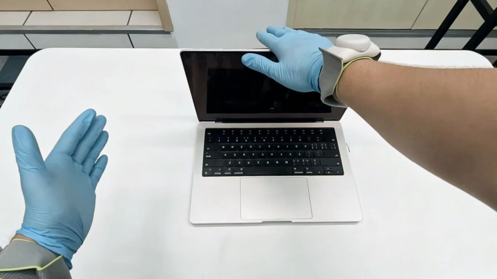
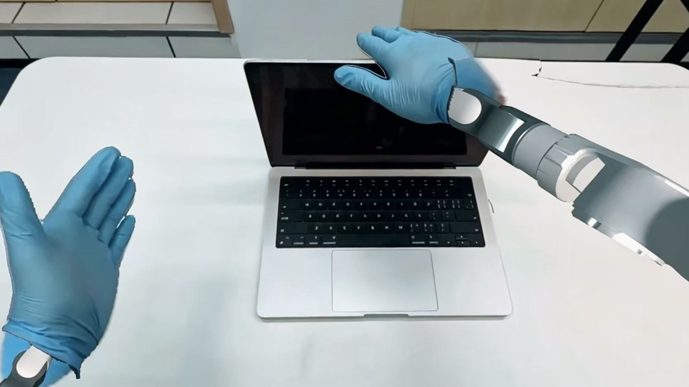
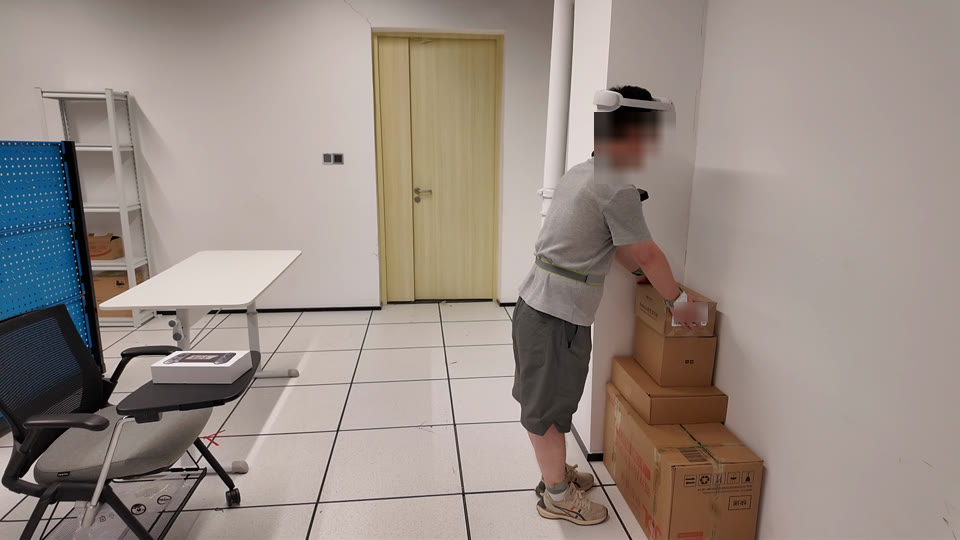
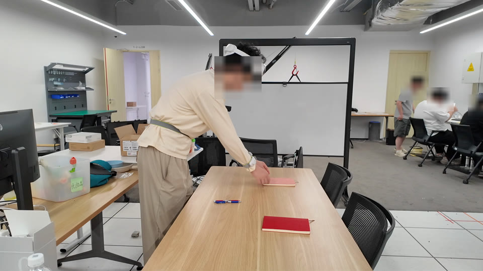
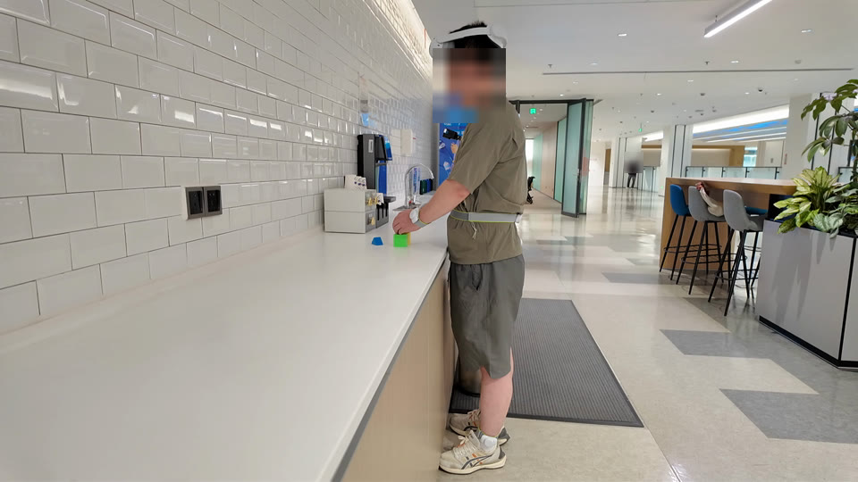

Target-task robot demos
Task supervision comes from humans.
The first egocentric human-to-humanoid skill transfer framework for coordinated whole-body loco-manipulation
EgoHumanoid-V2 turns egocentric human demonstrations into supervision for coordinated whole-body skills. Coarse-to-fine action alignment improves executed motion; visual alignment adapts human images for robot learning. Task-specific VLA policies deploy directly on Unitree G1.
 View figure ↗
View figure ↗Task supervision comes from humans.
Coordinated arms, torso, and legs.
200 human demonstrations per task.
Four tasks. Human-only task supervision. Zero-shot robot deployment.
Chair digitally removed; occluded areas are reconstructed. Original preserves the recording. Both versions anonymize faces.
From 25 to 200 demonstrations per task, the mean task score rises from 38.33% to 51.67%.


| Human demos / task | Laptop | Refrigerator | Curtain | Drawer |
|---|---|---|---|---|
| 25 | 35.00 | 21.67 | 40.00 | 56.67 |
| 50 | 31.67 | 33.33 | 38.33 | 36.67 |
| 100 | 48.33 | 28.33 | 50.00 | 53.33 |
| 200 | 53.33 | 38.33 | 53.33 | 61.67 |
H: Initial SONIC rolloutK: Kinematic reference correctionD: Dynamics-aware refinement
 View figure ↗
View figure ↗Mean across four tasks · higher is better
Simulation · lower is better
| Stage | Position (cm) | Orientation (°) |
|---|---|---|
| H | 11.21 | 21.22 |
| H + K | 4.45 | 13.77 |
| H + K + Ds | 3.41 | 6.71 |
| Action alignment | Laptop | Refrigerator | Curtain | Drawer | Mean |
|---|---|---|---|---|---|
| H | 0.00 | 0.00 | 28.33 | 56.67 | 21.25 |
| H + K | 46.67 | 31.67 | 51.67 | 58.33 | 47.08 |
| H + K + Ds | 53.33 | 38.33 | 53.33 | 61.67 | 51.67 |


| Training images | Laptop | Refrigerator | Curtain | Drawer |
|---|---|---|---|---|
| Human RGB | 31.67 | 16.67 | 35.00 | 50.00 |
| + Arm rendering | 51.67 | 23.33 | 41.67 | — |
| + Augmentation | 61.67 | 33.33 | 33.33 | 61.67 |
| + Both | 53.33 | 38.33 | 53.33 | — |
Task scores with 200 human demonstrations. Arm rendering is not evaluated for foot-operated drawer closing.
Online IK can conflict with SONIC’s control, disrupting balance and coordination.
Arm and waist IK; SONIC legs.
Endpoint IK + SONIC balance feedback.
Arm IK; SONIC waist and legs.
Everyday tasks across varied environments.






Simulation study · 112 paired trajectories